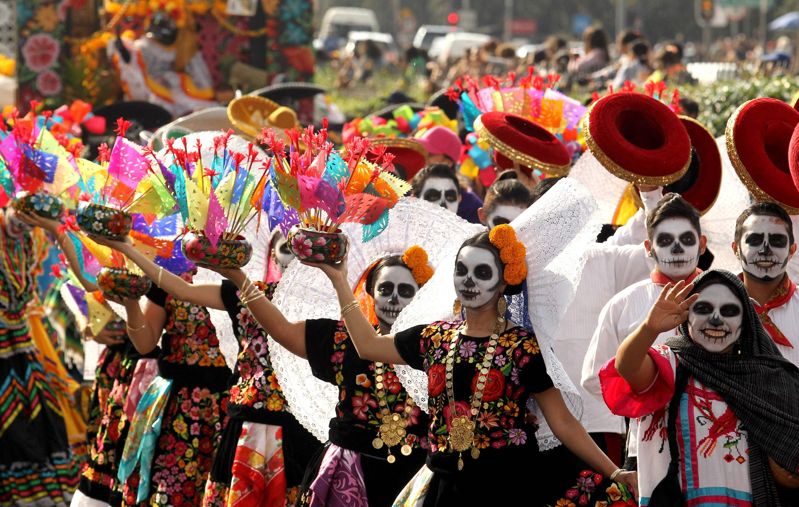
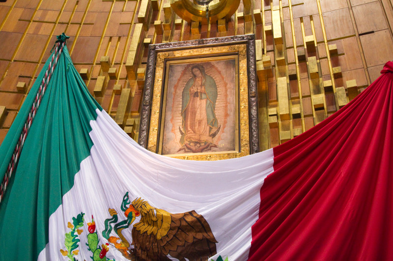

Tradiciones
Mexico es un pais que tiene una gran cantidad de tradiciones diferentes. Muchas de ellas son conocidas alrededor del mundo. El dia de los muertos probablemente es la mas conocida. Esto se celebra durante los primeros dos dias de noviembre. Esta celebracion se hace para honrar la memoria de los muertos.
religion
Aproximadamente, un 78 porciento de la poblacion mexicana son catolicos romanos; 10 porciento como protestantes o evangelicos y 1.5 porciento de la poblacion pertenecen a otros grupos religiosos como los judios o los testigos de Jehova.